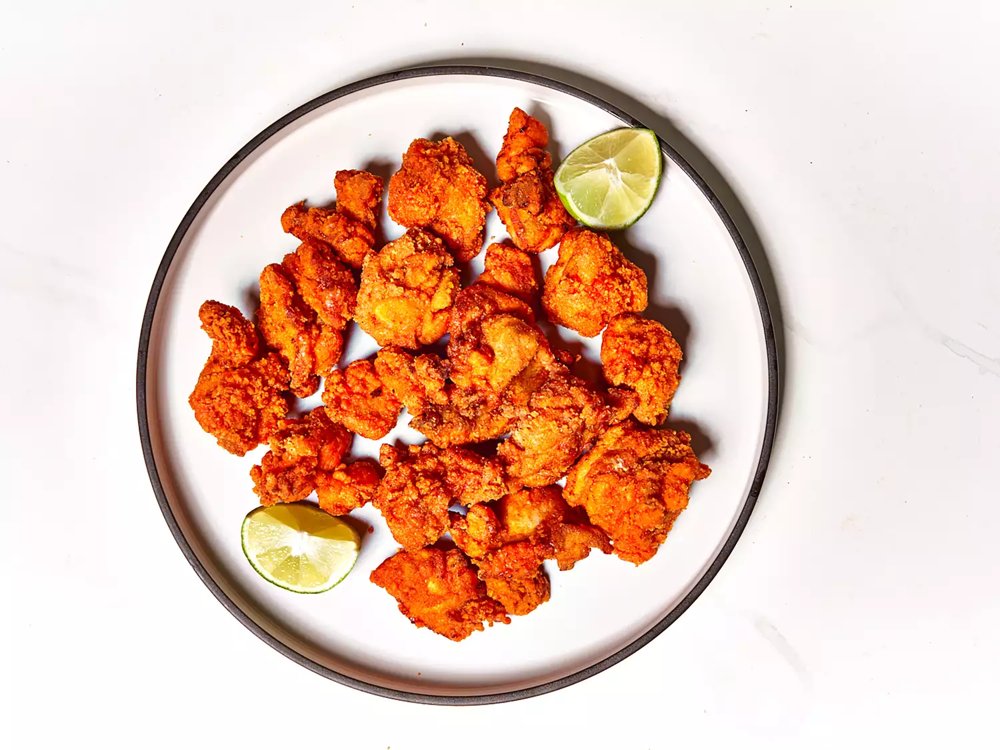

Chicharrones de Pollo

Description
For these Puerto Rican chicharrones de pollo, boneless chicken thigh
chunks marinate with citrus juices, garlic, adobo seasoning, and Sazon
seasoning, then are breaded and deep fried for amazing spicy, crunchy,
moist chicken bites.
Ingredients
- 1 pound skinless, boneless chicken thighs, cut into chunks
- 1 lemon, zested and juiced
- 1 orange, zested and juiced
- 1 lime, zested and juiced
- 1/2 cup minced garlic
- 2 tablespoons adobo seasoning
- 1 teaspoon onion powder
- 1 teaspoon freshly ground black pepper
- 1 teaspoon ground coriander
- 2 (.81 ounce) packets Sazon seasoning with coriander and achiote
- 1 quart oil for frying
- 3 cups all-purpose flour
- 1 cup cornstarch
- 1 pinch salt
- 1 pinch freshly ground black pepper
Directions
-
Combine chicken, lemon juice and zest, orange juice and zest, lime juice
and zest, minced garlic, adobo seasoning, onion powder, black pepper,
coriander, and Sazon seasoning in a large bowl; stir. Cover and marinate
in the refrigerator for 4 hours.
-
Heat oil in a large pot over medium heat to about 300 degrees F (150
degrees C). Place flour, cornstarch, pinch salt, and pinch pepper in a
large bowl. Remove chicken from marinade and add to flour in the bowl.
Toss chicken pieces with flour until evenly coated.
-
Fry coated chicken pieces in hot oil in small batches until golden brown
and crunchy, 5 to 10 minutes. An instant-read thermometer inserted into
the center should read at least 165 degrees F (74 degrees C).